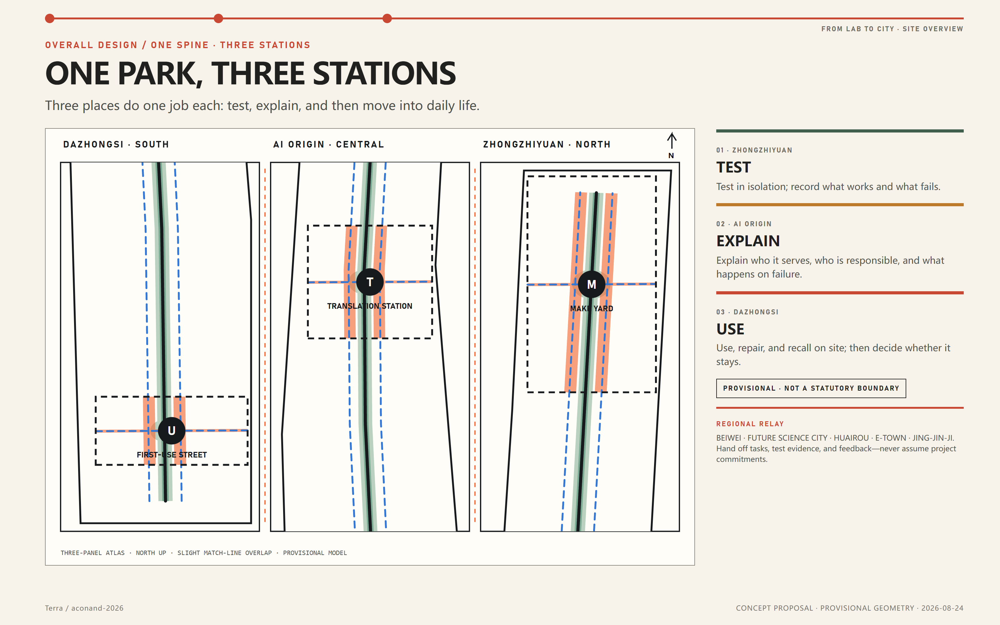
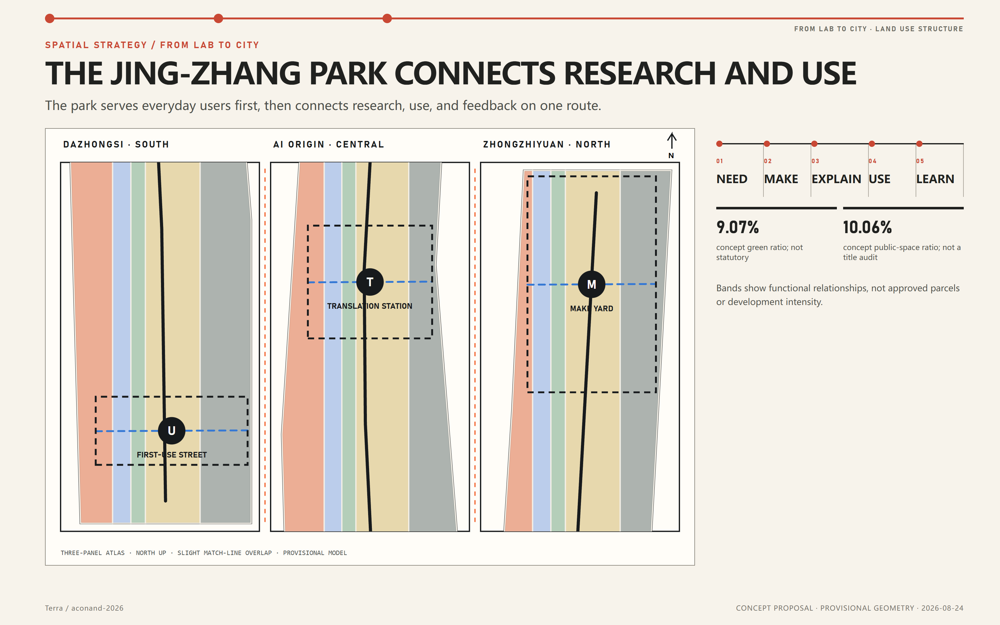
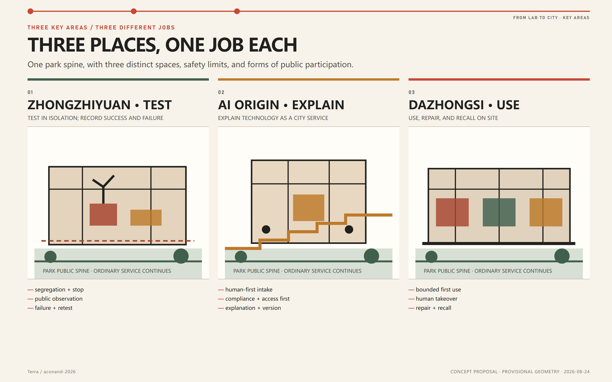
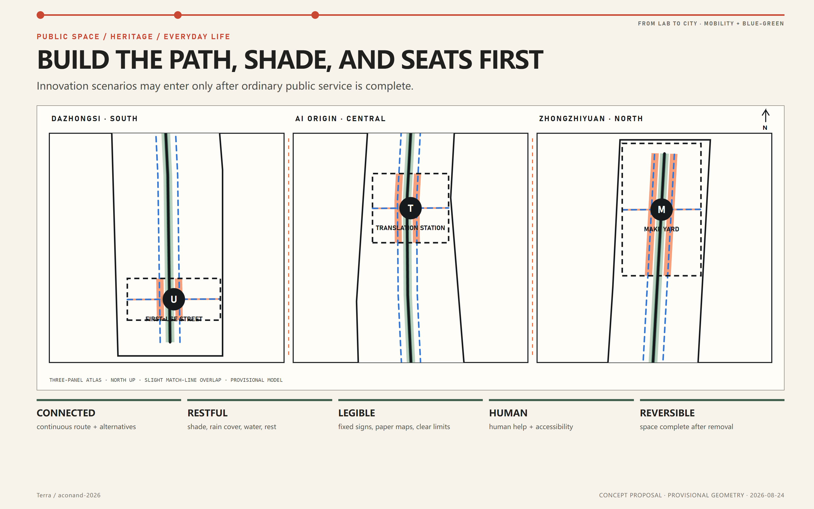
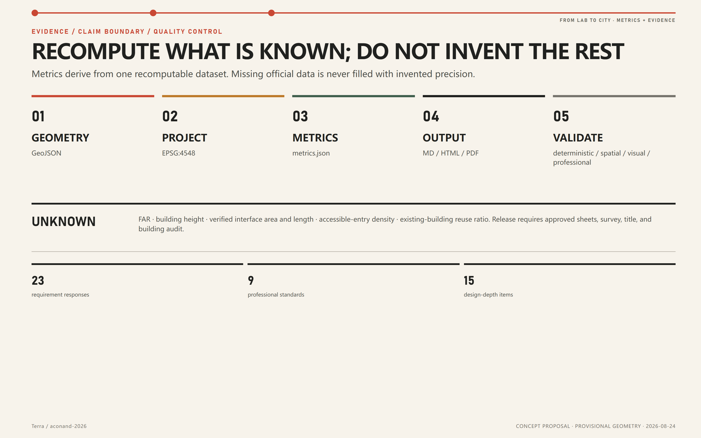

CENTENNIAL JING-ZHANG AI INNOVATION BELT
FROM LAB TO CITY
FROM LAB TO CITY
One park, three stations, bringing laboratory results into everyday city life.

CENTENNIAL JING-ZHANG AI INNOVATION BELT
One park, three stations, bringing laboratory results into everyday city life.
THE MISSING URBAN MILE
Many results can be demonstrated, but testing, responsibility, maintenance, and feedback remain disconnected. The Jing-Zhang park fills that gap.
URBAN DESIGN
01
Test, explain, and then move into daily life.

02
The park serves everyday users first, then hosts removable pilots.

03
Each station has a different job, risk limit, and form of public participation.

04
Connected, restful, legible, human, and reversible.

05
Every figure has a source or method; missing data remains explicitly blank.

CORE METRICS / DELIVERABLE INDEX

Ordinary service continues; small pilots can enter and leave on schedule.
100 DAYS / EVIDENCE / EXIT
First answer who needs it, who is responsible, what happens on failure, and when it stops. Statutory metrics and engineering conclusions remain open until official data arrives.